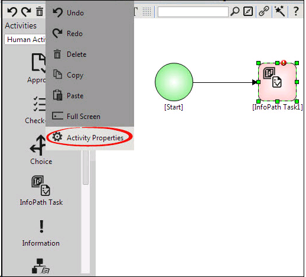

No
You can also open the Activity Properties area for a selected activity by clicking the activity icon and selecting the Activity Properties option from the Edit menu. This is the second method to access the Activity Properties area.

Note: You can also click the Activity Properties icon on the tool bar instead of selecting the option from the Edit menu to open the Activity Properties.